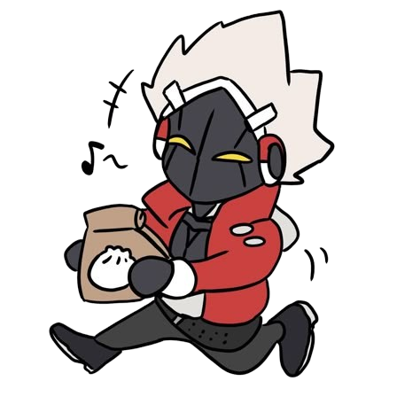
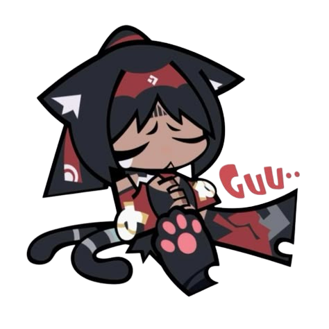
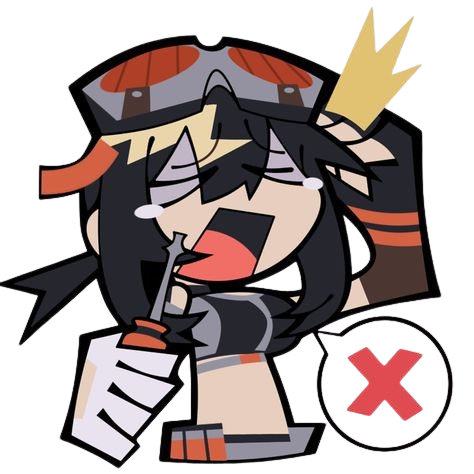
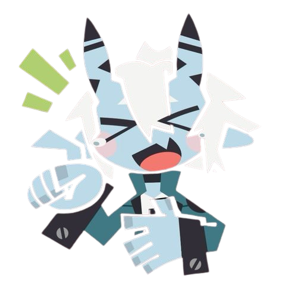
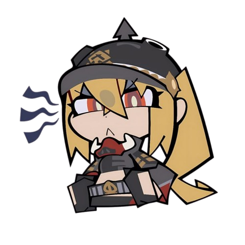
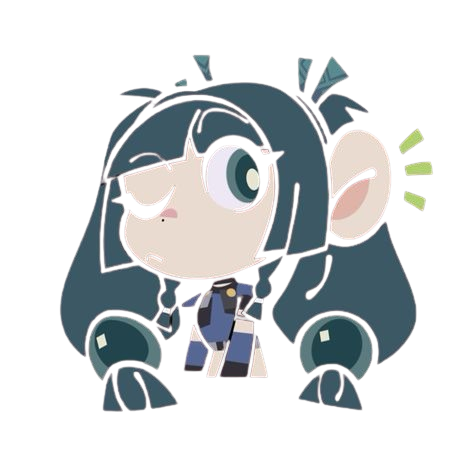
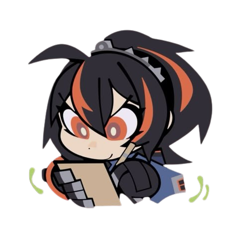
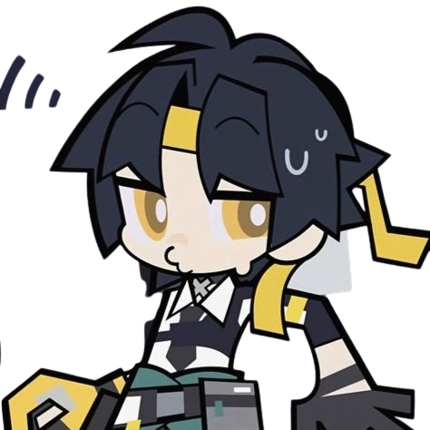

Here are the builds and what role do these agents go by, when it comes to teams comps and more!
Role: Support
Best W-engine: The Vault
Alt-W Engines: Unfettered game ball, Slice of time, Reverb- Mark ||, Reverb- Mark |||
Best Drive Discs: 4pc Swing Jazz and 2pc Chaotic Metal
Role: Stunner
Best W-engine: The Restrained
Alt-W Engines: Hellfire Gears, Steam Oven, Precious Fossilized Core, Demara Battery- Mark ||, Vortex Arrow
Best Drive Discs: 4pc Shockstar Disco and 2pc Swing Jazz

Role: Attack DPS
Best W-engine: Starlight Engine Replica
Alt-W Engines: Steel Cushion, The Brimstone, Starlight Engine, Street Superstar
Best Drive Discs: 4pc Puffer Electro and 2pc Woodpecker Electro

Role: Attack DPS
Best W-engine: Steel Cushion
Alt-W Engines: The Brimstone, Starlight Engine, Street Superstar, Canon Rotor
Best Drive Discs: 4pc Woodpecker Electro and 2pc Fanged Metal
Role: Stunner
Best W-engine: Hellfire Gear
Alt-W Engines: Ice-Jade Teapot, Precious Fossilized Core, Vortex-Arrow
Best Drive Discs: 4pc Shockstar Disco and 2pc Swing Jazz
Role: Defense
Best W-engine: Spring Embrace
Alt-W Engines: Original Transmorpher, Big Cylinder, Identity-Base
Best Drive Discs: 4pc Swing Jazz and 2pc Soul Rock
Role: Attack DPS
Best W-engine: Drill Rig - Red Axis
Alt-W Engines: The Brimstone, Starlight Engine, Street Superstar, Canon Rotor
Best Drive Discs: 4pc Thunder Metal and 2pc Swing Jazz

Role: Anomaly DPS
Best W-engine: Fusion Compiler
Alt-W Engines: Electro Lip Gloss, Weeping Gemini, Magnetic Storm-Alpha
Best Drive Discs: 4pc Freedom Blues and 2pc Swing Jazz
Role: Support
Best W-engine: Weeping Cradle
Alt-W Engines: Unfettered Game Ball, Slice of Time, Reverb-Mark ||, Reverb-Mark |||
Best Drive Discs: 4pc Freedom Blues and 2pc Swing Jazz
Role: Stunner
Best W-engine: The Restrained
Alt-W Engines: Ice-Jade Teapot, Hellfire Gears, Six Shooter, Steam Oven, Precious Fossilized Core
Best Drive Discs: 4pc Shockstar Disco and 2pc Swing Jazz
Role: Attack DPS
Best W-engine: HouseKeeper
Alt-W Engines: Steel Cushion, Cannon Rotor, Lunar-Noviluna
Best Drive Discs: 4pc Fanged Metal and 2pc Woodpecker Metal
Role: Attack DPS
Best W-engine: Deep Sea Visitor
Alt-W Engines: The Brimstone, Cannon Rotor, Street Superstar, Starlight Engine
Best Drive Discs: 4pc Polar Metal and 2pc Woodpecker Metal

Role: Support
Best W-engine: Bashful Demon
Alt-W Engines: Slice of Time, Unfettered Game Ball, Reverb-Mark |||
Best Drive Discs: 4pc Swing Jazz and 2pc Hormone Punk
Role: Anomaly Sub-DPS
Best W-engine: Flamemaker Shaker
Alt-W Engines: Elecrto-Lip Gloss, Weeping Gemini, Roaring Ride, Rainforest Gournamet
Best Drive Discs: 4pc Chaos Jazz and 2pc Inferno Metal
Role: Defense
Best W-engine: Tusks Of Fury
Alt-W Engines: Spring Embrace, Original Transmorpher
Best Drive Discs: 4pc Proto Punk and 2pc Shockstar Disco
Role: Anomaly DPS
Best W-engine: Roaring Ride
Alt-W Engines: Fushion Compiler, Electro-Lip Gloss, Weeping Gemini, Rainforest Gourmet
Best Drive Discs: 4pc Freedom Blues and 2pc Swing Jazz

Role: Support
Best W-engine: Kaboom The Cannon
Alt-W Engines: Reverb-Mark |||
Best Drive Discs: 4pc Swing Jazz and 2pc Hormone Punk
Role: Anomaly DPS
Best W-engine: Sharpened Stinger
Alt-W Engines: Electro Lip Gloss, Weeping Gemini, Fusion Compiler, Rainforest Gourmet, Roaring Ride
Best Drive Discs: 4pc Fanged Metal and 2pc Freedom Blues

Role: Stunner
Best W-engine: Ice-Jade Teapot
Alt-W Engines: The Restrained, Hellfire Gears, Steam Oven, Precious Fosillized Core, Six Shooter
Best Drive Discs: 4pc Shockstar Disco and 2pc Swing Jazz
Role: Defense
Best W-engine: Peacekeeper-Specialized
Alt-W Engines: Spring Embrace, Bunny Band, Original Transmorpher
Best Drive Discs: 4pc Proto Punk and 2pc Hormone Punk

Role: Attack DPS
Best W-engine: Riot Suppressor Mark VI
Alt-W Engines: The Brimstone, Cannon Rotor, Starlight Engine, Street Superstar
Best Drive Discs: 4pc Chaotic Metal and 2pc Woodpecker Electro
Role: Attack DPS
Best W-engine: The Brimstone
Alt-W Engines: Cannon Rotor, Starlight Engine, Lunar-Noviluna
Best Drive Discs: 4pc Inferno Metal and 2pc Woodpecker Electro
Role: Anomaly DPS
Best W-engine: Hailstorm Shrine
Alt-W Engines: Fusion Compiler, Electro Lip Gloss, Roaring Ride
Best Drive Discs: 4pc Branch and Blade Song and 2pc Woodpecker Electro. 2pc W.E (Woodpecker Electro) can be replaced with 2pc Metal
Role: Flex Character (can either be a Sub DPS or Main DPS)
Best W-engine: Timeweaver
Alt-W Engines: Fusion Compiler, Electro Lip-Gloss, Weeping Gemini, Rainforest Gourmet
Best Drive Discs: 4pc Thunder Metal and 2pc Chaos Jazz

Role: Quick Swap DPS
Best W-Engine: Zanshin Herb Case
Alt W-Engines: The Brimestone, Cannon Rotor, Drill Rig - Red Axis, Starlight Engine
Best Drive Discs: 4pc Thunder Metal and 2pc Woodpecker Electro
Role: Quick Swap DPS
Best W-Engine: Hearstring Nocturne
Alt W-Engines: Marcato Desire, Cannon Rotor, Steel Cushion, Street Superstar
Best Drive Discs: 4pc Woodpecker Electro and 2pc Inferno metal
Role: Support Healer
Best W-Engine: Elegant Vanity
Alt W-Engines: Kaboon Canon, Bashful Demon, The Vault
Best Drive Discs: 4pc Astral Voice and 2pc Swing Jazz
Role: Stunner
Best W-Engine: Blazing Laurel
Alt W-Engines: Ice-Jade Teapot, The Restrained, Steam Oven
Best Drive Discs: 4pc Shockstar Disco and 2pc Inferno Metal